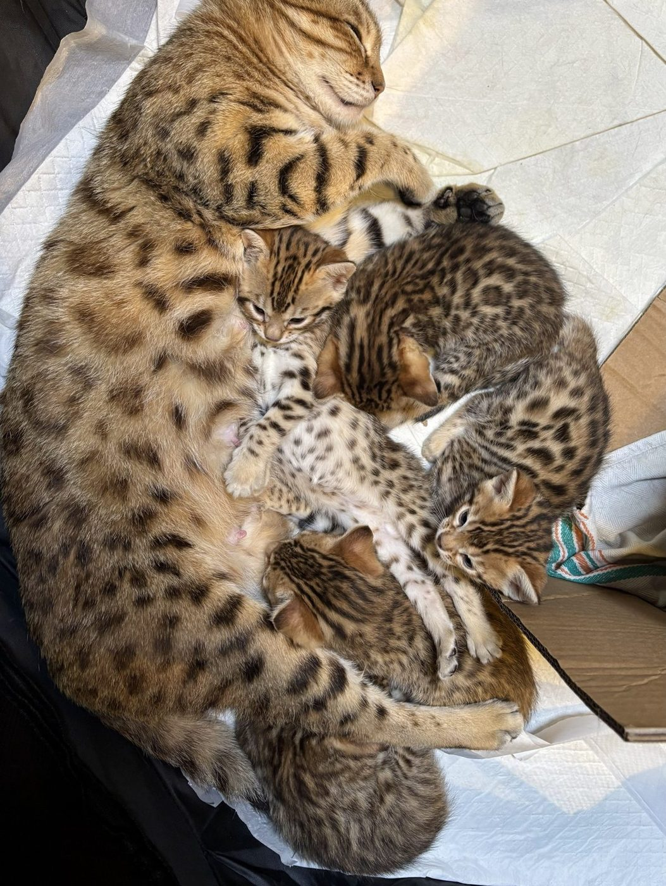
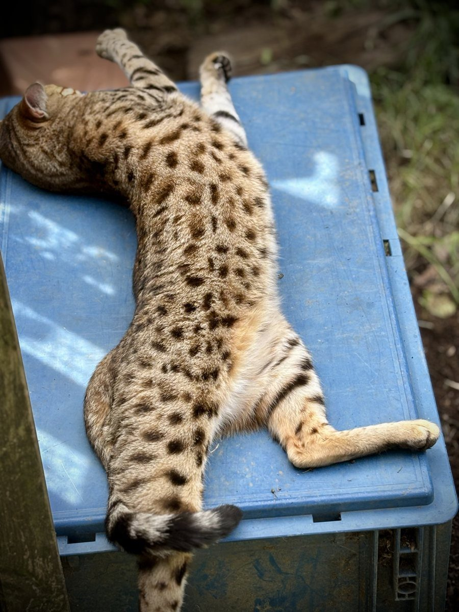
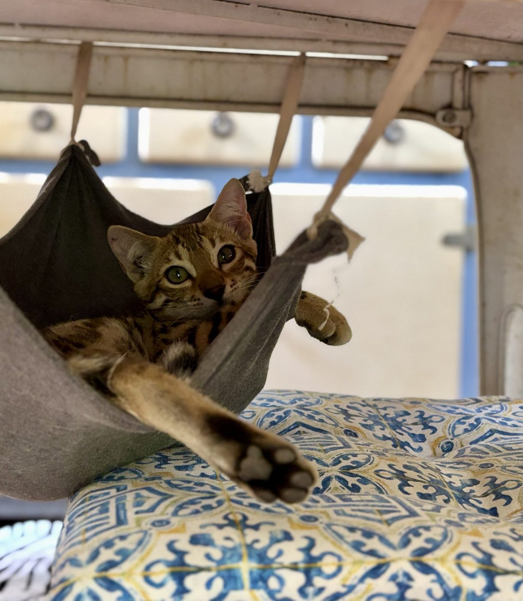
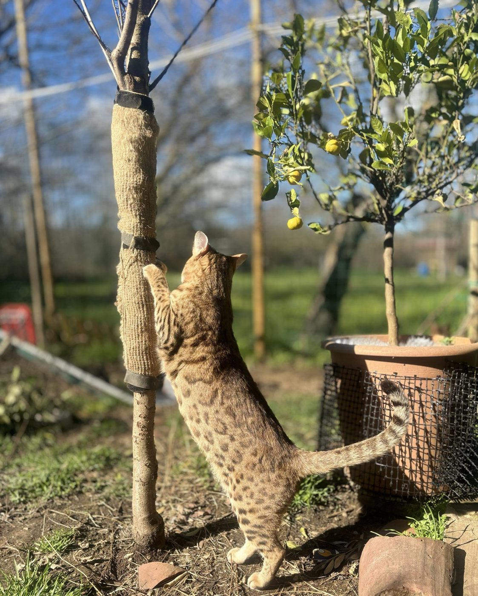
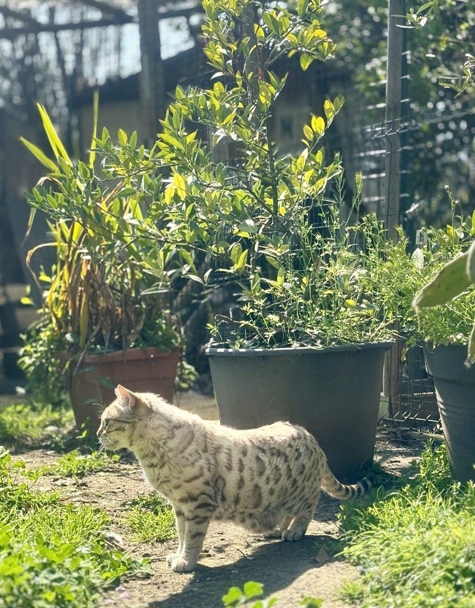
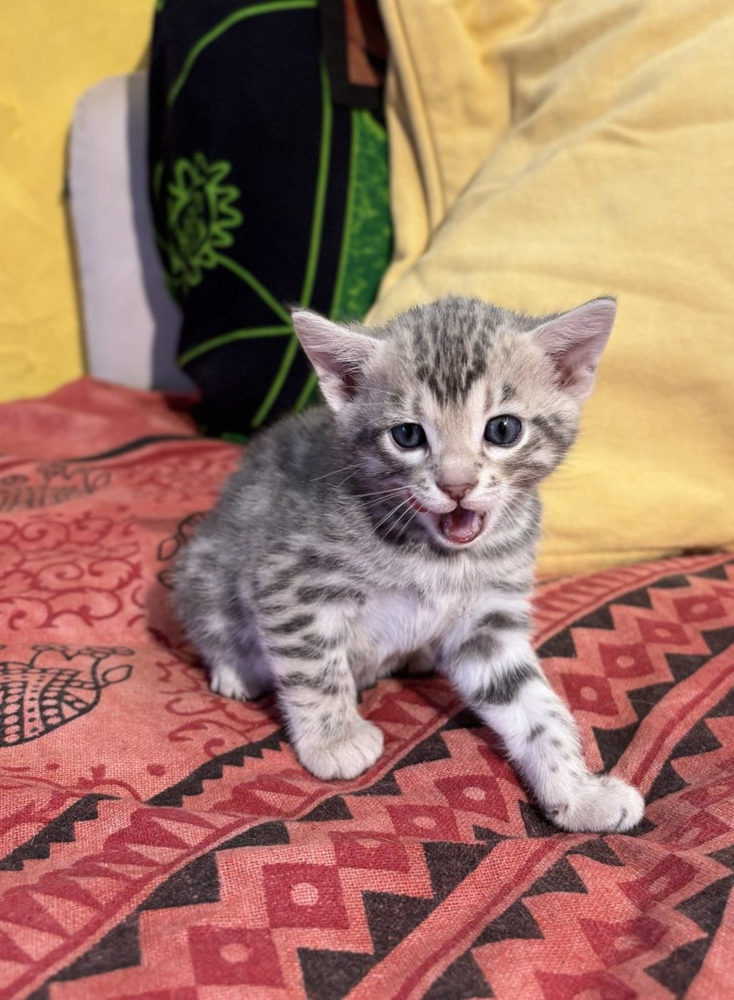

Allevamento amatoriale di gatti Bengala · Sasso Marconi (BO) · dal 2013
Bengala dall'aspetto selvatico, sani e socievoli
Selezioniamo Bengala che richiamano il piccolo felino da cui la razza ha avuto origine, il Prionailurus bengalensis: non solo maculati, ma con quel "qualcosa in più" di selvatico. Cresciuti in casa, testati e seguiti da due veterinarie.
Ti rispondiamo tutti i giorni, indicativamente dalle 10 alle 18.

Chi siamo
Due veterinarie, una passione: il Bengala
Siamo Veronica e Tania, due socie veterinarie. Nel 2013 abbiamo unito le forze per allevare questo gatto meraviglioso dall'aspetto selvaggio, intelligente e giocherellone.
I gatti vivono alle porte di Bologna, a casa di Veronica, che li segue ogni giorno. Tania la affianca nei parti, nella socializzazione dei gattini, nell'assistenza veterinaria e quando Veronica è assente.
Scopri l'allevamento →
Salute
Test genetici, ecocardiogrammi periodici, controlli per parassiti e virus, dieta seguita da una nutrizionista.
Benessere
Casa a misura di gatto e 150 m² di giardino in sicurezza, con gattaiola sempre aperta.
Aspetto
Il Bengala non deve essere solo maculato: deve avere quel "qualcosa in più" di selvatico.
Carattere
Curioso, intelligente, interattivo. La priorità è che siano sereni e contenti.
Ciò che ci contraddistingue
L'aspetto wild
Orecchie piccole, espressione intensa, corpo robusto, pancia chiara, coda grossa portata bassa: cerchiamo Bengala che ricordino davvero il loro antenato selvatico.




La nostra casa
Una casa, un giardino e tanta vita di famiglia
Mamme e gattini vivono in casa. Dal 2023 tutto il giardino, circa 150 m², è messo in sicurezza: i gatti entrano ed escono liberamente dalla gattaiola.





I nostri gatti
Riproduttori
Maschi


Femmine



Gattini
Gattini in cerca di famiglia
Per foto e video aggiornati, genitori, colori e tempi di adozione, chiamaci o scrivici su WhatsApp: ti mandiamo tutto il materiale.
Contatti
Parliamo del tuo futuro Bengala
Compila il modulo: Veronica riceve subito la tua richiesta e ti ricontatta. Se preferisci, chiamaci o scrivici direttamente.